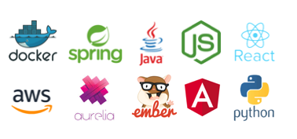

<template>
  <div class="row">
    <div class="col s12 m12">
      <md-card title="Professional" class="col s12 m12">
        <div class="row">
          <div class="col s12 m8" >
            <br/>
            <p>Not only focused on back or front end technologies. I had the luck to work with multidisciplinary teams
              learning best practices about each area in the software development process, including DevOps, Quality
              Assurance and cloud infrastructure.</p>
          </div>

          <div class="col s12 m4">
            
          </div>
        </div>
      </md-card>
    </div>
  </div>

</template>
